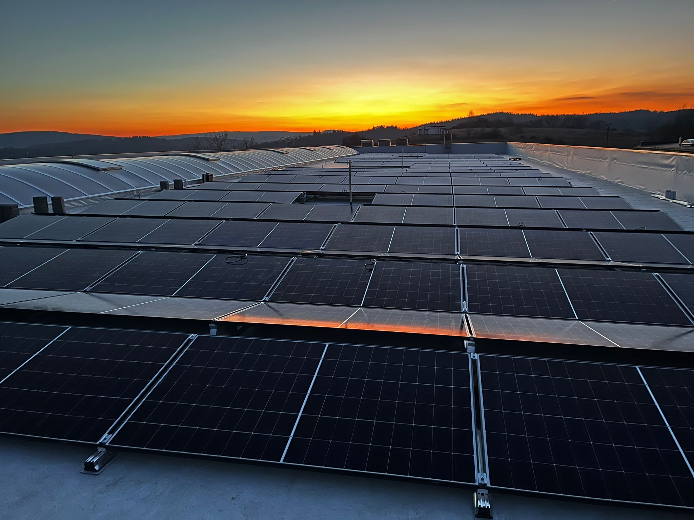

Nové připojovací podmínky
Připojovací podmínky pro vn a vvn platné od 1. 9. 2025 nahradily verzi z roku 2023. K nim patří dodatky č. 1 a 2 pro zařízení pro ukládání elektřiny a volné přílohy VP_01 až VP_15 — ochrany, Q(U), telemetrie, testy.
Provozovatel distribuční soustavy
Průvodce podmínkami platnými od 1. 9. 2025.
Metodiky ověřování souladu jsou společné pro všechny tři velké distributory — co se ověřuje, je tedy stejné jako u EG.D i PREdistribuce. Co se liší, jsou připojovací podmínky, nastavení ochran, telemetrie a formuláře. Tahle stránka shrnuje to, co je specifické pro ČEZ Distribuci.
Metodiky provozovatelů distribučních soustav se průběžně mění. U konkrétního projektu vždy ověřujeme aktuální verzi dokumentů příslušného provozovatele.
Připojovací podmínky
Připojovací podmínky pro vn a vvn platné od 1. 9. 2025 nahradily verzi z roku 2023. K nim patří dodatky č. 1 a 2 pro zařízení pro ukládání elektřiny a volné přílohy VP_01 až VP_15 — ochrany, Q(U), telemetrie, testy.
Rychlý poruchový proud s gradientem k = 3. Umělou setrvačnost ČEZ Distribuce požaduje u kategorií C a D; po B2 ji — v souladu s výběrovostí, kterou Příloha 4 připouští — nepožaduje. Start ze tmy ani ostrovní provoz nepožaduje.
Předepsané hodnoty a zpoždění pro výrobní moduly i akumulaci od 0 do 30 MW. Ochrany za rozpadovým místem se nastavují shodně s rozpadovým místem. Kompletní tabulka →
Dodatek č. 1 řeší posouzení připojitelnosti úložiště, dodatek č. 2 samotný proces včetně lhůty 30 dnů na rozhodnutí o trvalém provozu a periodického přezkoušení ochran jednou za čtyři roky.
Data do dispečinku
Záložní napájení minimálně 8 hodin po odpojení, mobilní síť 2G + 4G (SIM kartu na nn a vn dodává distributor; na vvn se připojuje opticky nebo metalicky přes transformovnu), telemetrie protokolem IEC 60870-5-104, šifrování IPSec nebo podle IEC 62351-5.
Žádost o funkční zkoušku bod–bod do dispečerského řídicího systému se podává s vyplněnou tabulkou telemetrie VP_02. Zkouška se koordinuje s dispečinkem — termín je potřeba domluvit s předstihem.
Regulace napětí
| Rezervovaný výkon | Způsob regulace | Poznámka |
|---|---|---|
| pod 1 MW | Q(U) — autonomní charakteristika | Body 0,94 / 0,97 / 1,05 / 1,08 Un, časová konstanta 20 s, rozsah cos φ ±0,9 (VP_08) |
| 1 MW a více | U/Q regulace | Dálkové řízení napětí jalovým výkonem podle pokynů dispečinku |
| od 30 MW | vždy U/Q regulace | Bez ohledu na další parametry |
Platí pro vn a vvn. Rozhoduje rezervovaný výkon podle smlouvy o připojení (VP_12, aktualizace 12/2025). U akumulace platí PQ diagram pro oba směry činného výkonu.
VP_10 a VP_11
Zvláštnost ČEZ Distribuce, o které řada provozovatelů neví: tenhle test si provádí uživatel sám, bez účasti distributora — a jeho protokol je povinnou přílohou žádosti o trvalý provoz.
0 – 30 – 60 – 100 % instalovaného výkonu.
Doporučené pořadí 100 → 60 → 30 → 100 → 0 → 100 %.
Start při výkonu nejméně 70 % Pi, ustálení na každém stupni minimálně jednu minutu.
Protokol podle VP_11 — bez něj distributor žádost o trvalý provoz nepřijme jako úplnou.
Test si můžete udělat sami — nebo přijedeme, změříme ho kvalimetrem třídy A a vystavíme protokol rovnou v podobě, kterou distributor čeká.
Poptat měřeníZdroj: Připojovací podmínky vn a vvn ČEZ Distribuce s přílohami VP_05 až VP_15, platné od 1. 9. 2025 (VP_12 aktualizace 12/2025) · dodatky č. 1 a 2 pro ZUE

Poptávka
Ze smlouvy o připojení a jednopólového schématu poznáme kategorii výrobního modulu i rozsah ověření. Ozveme se s tím, co vás čeká, do dvou pracovních dnů.
Čím víc toho napíšete rovnou, tím přesněji odpovíme. Ideálně: provozovatel distribuční soustavy, kategorie ze smlouvy o připojení, instalovaný výkon, počet a typ střídačů a jestli je součástí bateriové úložiště.
Přejít na poptávkový formulář